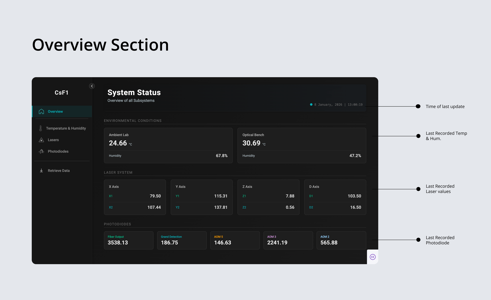
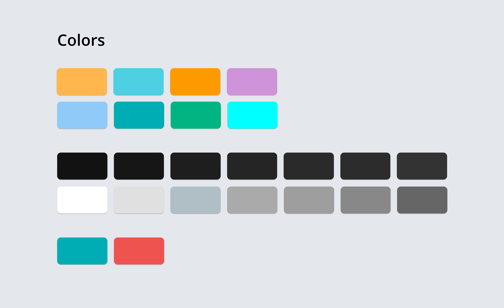
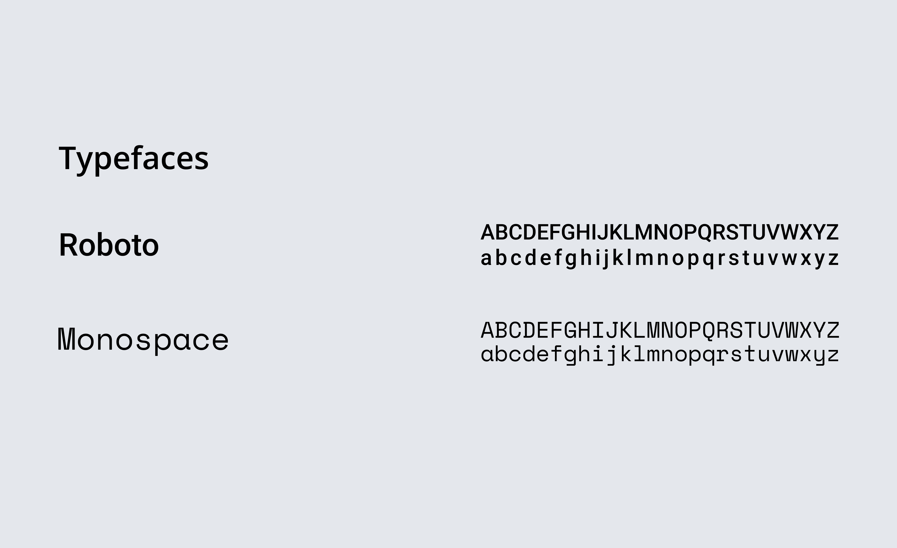

From fragmented instruments to one real-time digital twin
Developed during my R&D internship at CSIR-NPL under Dr. Poonam Arora, this dashboard consolidated isolated monitoring tools into a centralized platform for scientists operating the Cesium Fountain Atomic Clock.
Launch PrototypeThe CsF1 defines the SI second. Microscopic shifts in temperature, humidity, laser alignment, or photodiode voltage can corrupt observations, so the interface had to make instability visible immediately.
Signals lived in separate tools
Temperature, humidity, and laser readings were split across fragile scripts and hardware-specific interfaces.
Photodiodes had no dedicated monitor
A critical feedback system for the light chain had to be brought into the same observation surface.
Monitoring needed to survive long sessions
Frequent errors and manual checks created risk during experiments where small drift can affect clock stability.
02 · Lab Constraint
Designed for a dark room where light is a contaminant
Constraint
No high-luminance UI
The CsF1 lab operates under strict optical conditions. The dashboard had to avoid bright surfaces that could interfere with the atomic transition experiment.
Visual response
Neon-dark hierarchy
Deep backgrounds reduced light pollution, while cyan, green, orange, and coral accents separated dense data streams.
Reading pattern
Peripheral status cues
Scientists could detect active modules, connection status, and anomalies without reading every label.
The solution rebuilt the acquisition pipeline so isolated instruments could feed a single Python backend and a responsive Plotly Dash interface.
Selected layer · 01
FLUKE 1620A Thermo-Hygrometer
Serial data from the thermo-hygrometer tracks ambient and optical-bench temperature/humidity so scientists can see environmental drift before it destabilizes the experiment.

Reject incomplete packets
The Flask endpoint checks required laser and photodiode fields before anything reaches storage.
Log IST, UTC, and MJD
Each reading carries local readability, universal synchronization, and research-grade plotting time.
Rotate daily CSV logs
Sensor-specific folders keep long-running experiments easy to retrieve, archive, and share.
Refresh every 10 seconds
Cards, graphs, and status indicators update without forcing scientists to manually reload the page.
04 · Interface Modules
Switch through the dashboard logic
Overview
Macro health at a glance
The overview screen aggregates ambient conditions, laser coordinates, photodiode values, connection health, and last server update time into one fast scanning surface.



Outcome
A unified monitoring ecosystem for scientific observation
Unified ecosystem
Consolidated environmental, laser, photodiode, and retrieval workflows into a single monitoring surface.
Faster diagnosis
Grouped paired lasers, photodiode traces, and connection states so scientists could identify imbalance and light-chain failures quickly.
Research-ready data
Historical querying, scientific timestamps, and CSV export supported post-hoc analysis without interrupting live observation.
Presented Work
Shared at AdMet 2025
12th International Conference on Advances in Metrology and Standards
This work was presented at AdMet 2025, the flagship Advances in Metrology conference organized around research, industrial applications, and emerging measurement technologies.